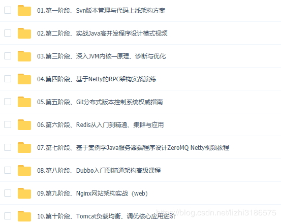
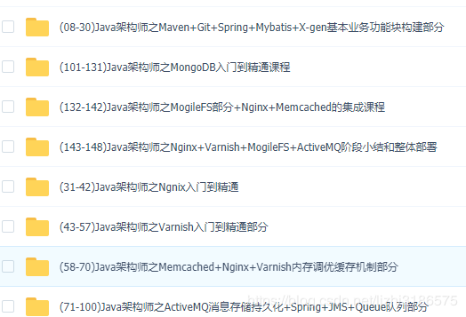
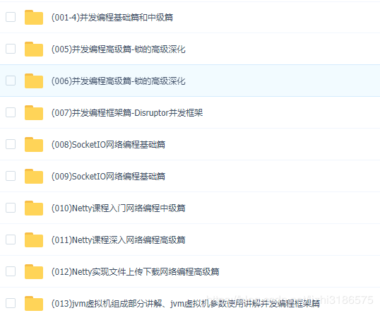
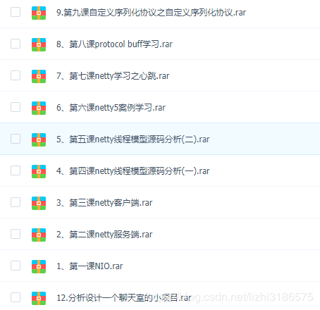
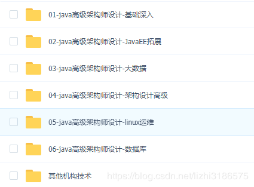
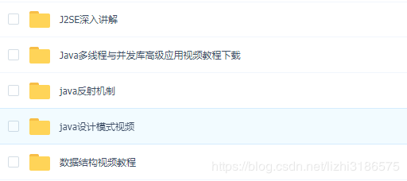
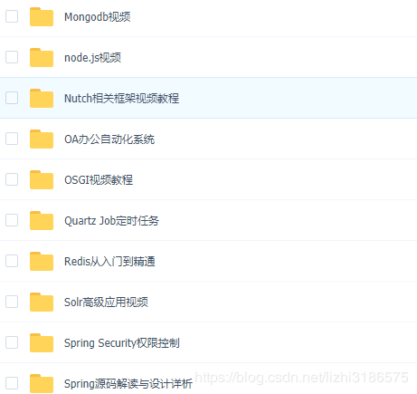
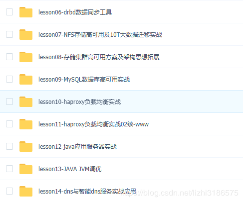
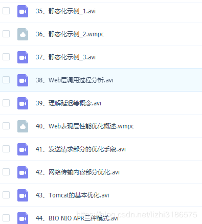

大多程序员在工作三、四年后，就会对自工作有所懈怠，因为程序员在工作三四年后，项目开发所需要的知识基本已经从工作中学习到并掌握，之后工作莫非就是重复，复制粘贴是工作中的常态，此时很多人都很想寻新的方向来突破自己，这样才能够去寻找新的工作机会来提升自己的待遇，否则，不但不会涨工资，找个工作可能都会很困难。
关于初中级程序员提升的资料，线上线下资源都很少，相反学习入门的教程资料确是很多，对于技术而言，都是入门易，学精难。
本人最近从网上购买到相关教程，并通过自己的整理现在分享给大家，希望大家能够认真学习进步，提升自己的水平。
视频课程内容包含：
高级Java架构师包含：Spring boot、Spring cloud、Dubbo、Redis、ActiveMQ、Nginx、Mycat、Spring、MongoDB、ZeroMQ、Git、Nosql、Jvm、Mecached、Netty、Nio、Mina、性能调优、高并发、tomcat负载均衡、大型电商项目实战、高可用、高可扩展、数据库架构设计、Solr集群与应用、分布式实战、主从复制、高可用集群、大数据等高端视频课程。
15套目录（以下目录全是视频课程）：
第一套：高级架构师四十二个阶段高端课（150G）
第二套：Java高级系统培训架构课程148课时（阶段一）（30G）
第三套：Java高级互联网架构师课题（50G）
第四套：Java互联网架构Netty、Nio、Mina等-视频教程（60G）
第五套：Java高级架构设计2016整理-视频教程（200G）
第六套：Java架构师进阶篇，高级篇，架构篇-视频教程（250G）
第七套：Java架构师必修linux运维系列课程（35G）
第八套：Java高级系统培训架构课程116课时（阶段二）（25G）
需要的朋友可以微信号： 794170314（QQ同号）









需要的朋友可以微信号： 794170314（QQ同号）